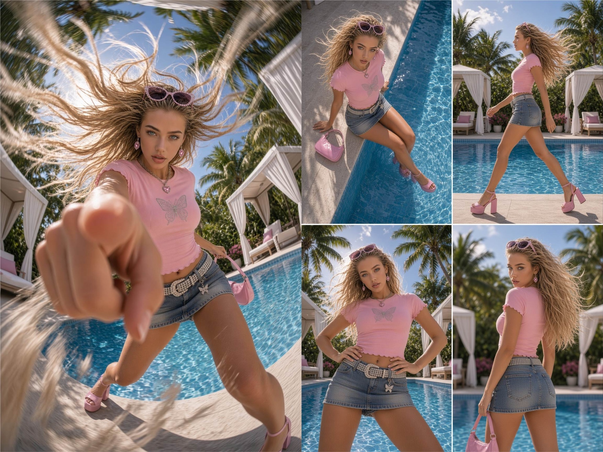
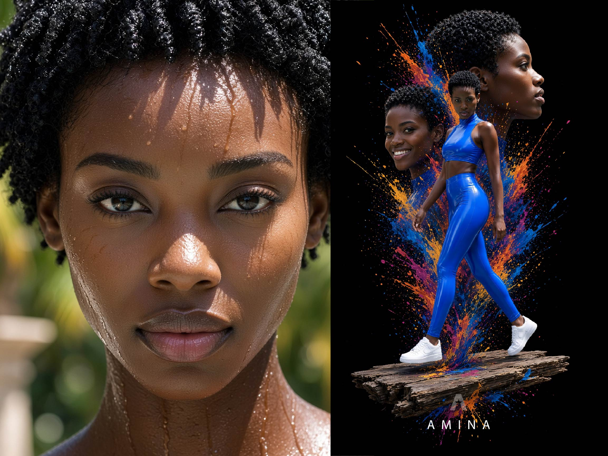
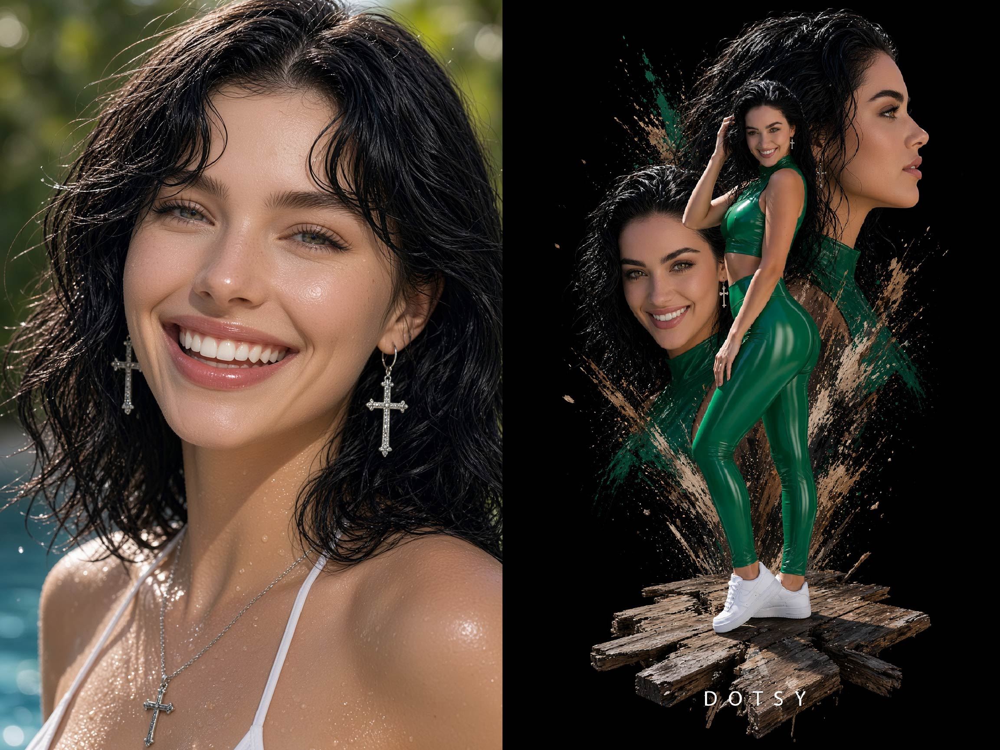
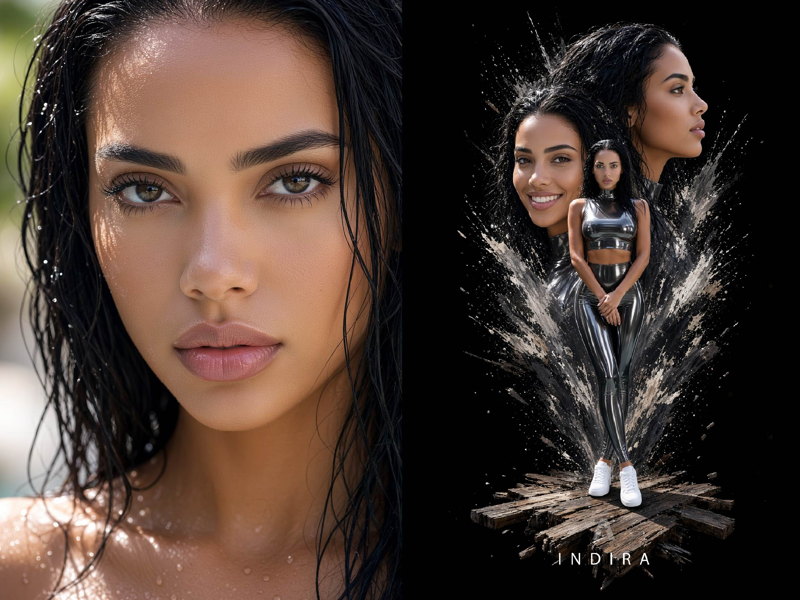
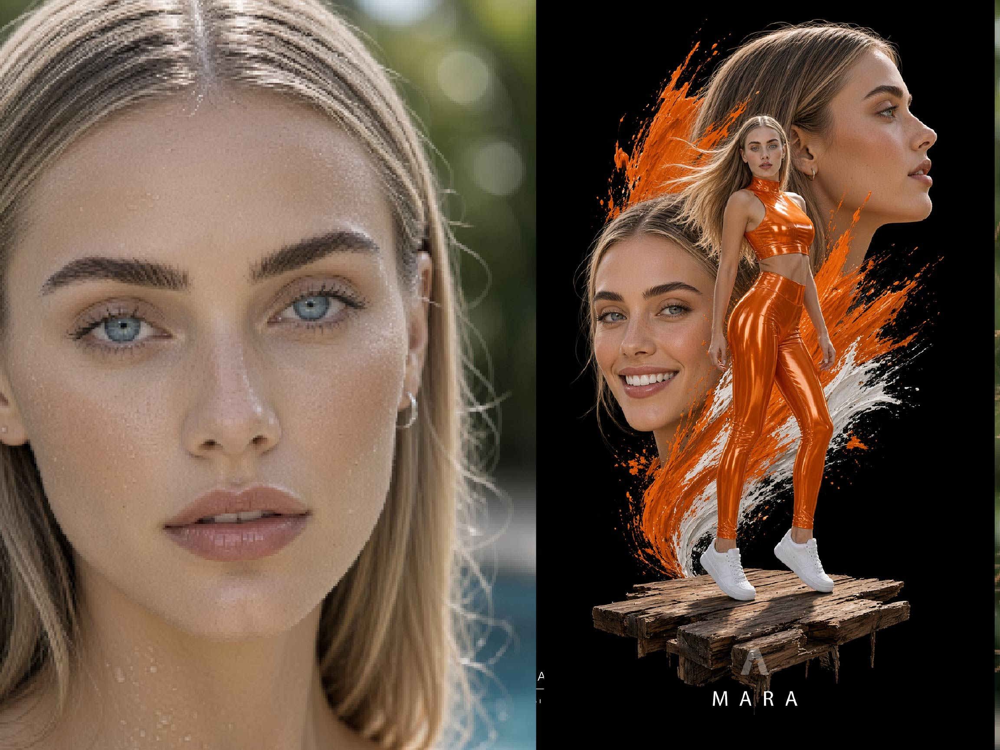
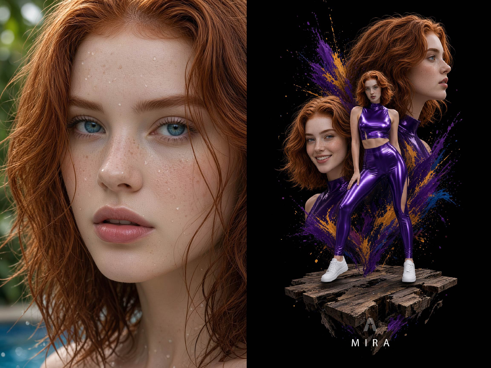
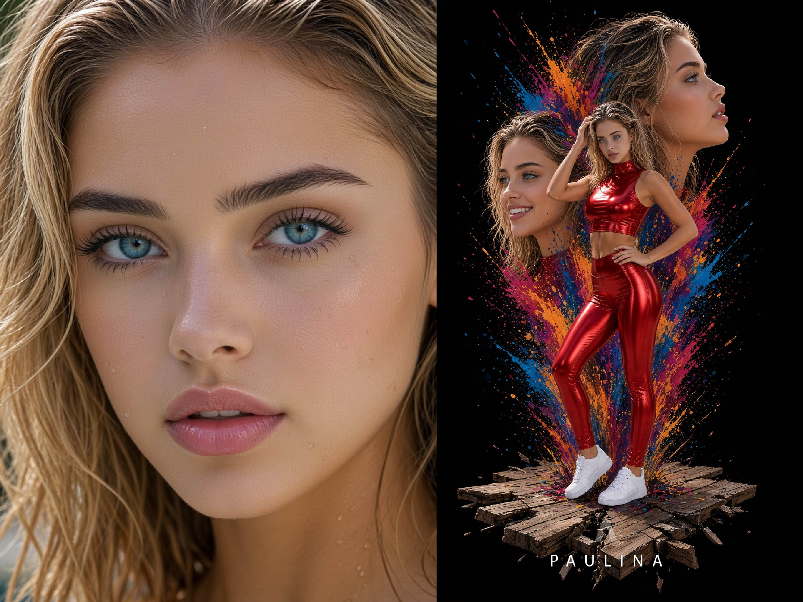
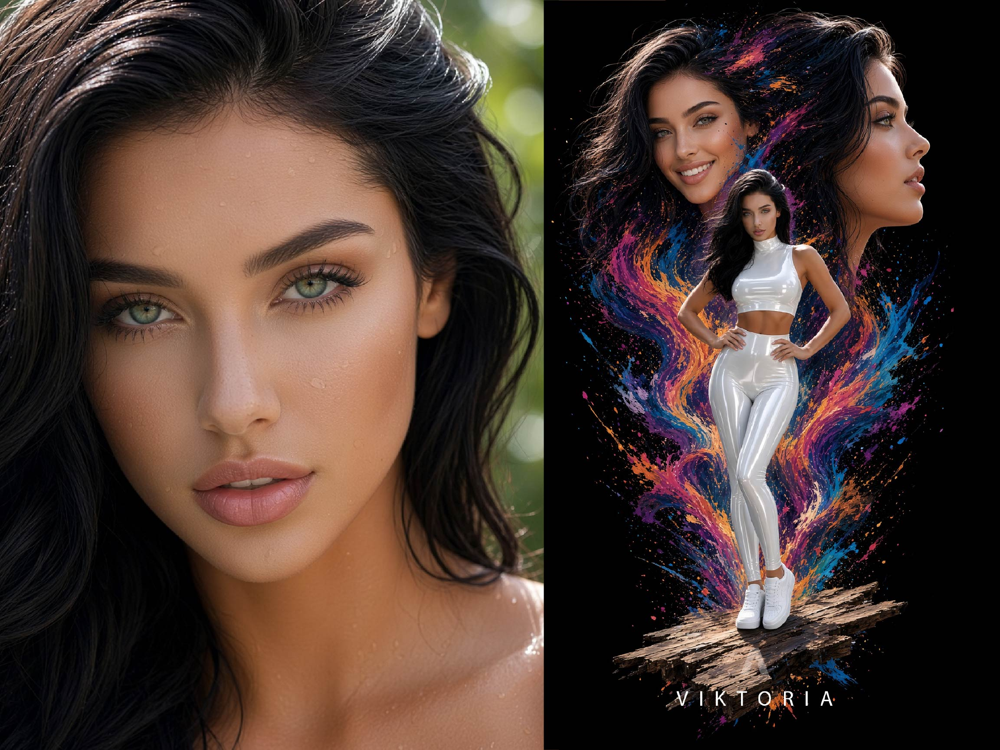
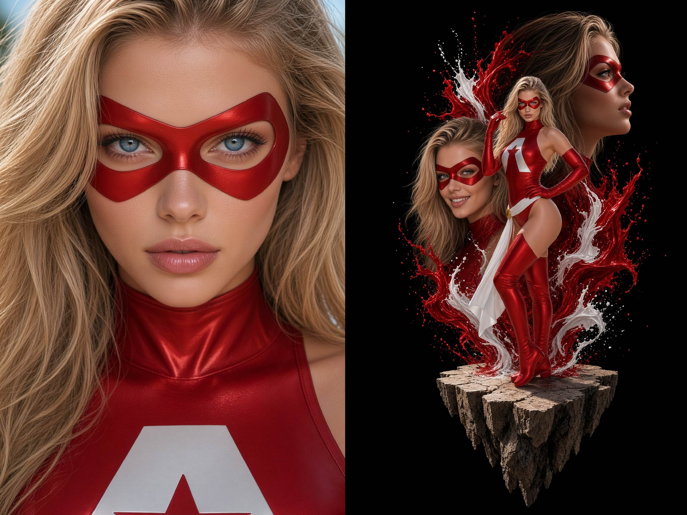

Identificar el problema
Examinar qué parte de una descripción admite interpretaciones diferentes: un material, un corte, una posición, una escala o una relación entre objetos.
AXFRA — Axion Frame Tools investiga cómo construir imágenes mediante decisiones visuales precisas, documentadas y reutilizables.
Identidades, vestuario, poses, objetos, escenarios, cámara, iluminación y estilos gráficos: cada elemento puede definirse, estudiarse y modificarse.
No es un generador de imágenes. Es una referencia de conocimiento para trabajar con motores de generación visual.
Una selección provisional de estudios visuales. Estas imágenes muestran aplicaciones distintas del trabajo con identidades, escenarios, objetos, vestuario y composición.

Una instrucción puede producir una imagen interesante. Pero cuando buscamos un resultado específico, cada ambigüedad importa. AXFRA estudia esas ambigüedades y desarrolla formas de describirlas con mayor precisión.
Examinar qué parte de una descripción admite interpretaciones diferentes: un material, un corte, una posición, una escala o una relación entre objetos.
Separar estructuras y propiedades. Distinguir aquello que define una pieza de lo que puede variar: forma, material, color, transparencia o proporciones.
Organizar descripciones en catálogos, identificadores, parámetros, reglas y estructuras JSON que faciliten la reutilización y la comparación.
Aplicar las instrucciones en motores de generación visual y observar cómo se traducen las especificaciones en resultados concretos.
Revisar las instrucciones cuando una prenda, una pose, un objeto o una composición no responde a lo solicitado.
Modificar componentes específicos sin tener que redefinir toda la escena: cambiar el vestuario, conservar una identidad o sustituir un escenario.
Estas áreas organizan el trabajo existente y ofrecen una estructura para incorporar nuevos estudios. No representan un catálogo cerrado.
Núcleos de identidad, rasgos, proporciones y continuidad visual entre imágenes.
Posturas, gestos, movimiento sugerido y relación del sujeto con los elementos de la escena.
Familias de prendas, cortes, tejidos, grosores, transparencias, estampados y atributos intercambiables.
Construcción de elementos complejos, disposición espacial, entornos y relaciones entre componentes.
Encuadres, ópticas, perspectivas, jerarquías visuales, dirección de la luz y organización de la imagen.
Ilustración, dibujo, montaje editorial, lenguaje cinematográfico y transformaciones que conservan atributos definidos.
Identidades originales que permiten estudiar la continuidad de un sujeto cuando cambian el vestuario, la acción, el entorno o el lenguaje gráfico.








Estas láminas presentan las identidades. Los estudios visuales exploran su aplicación en acciones, situaciones y estilos diferentes. La selección de ejemplos se ampliará y diversificará durante el desarrollo del archivo.
AXFRA reúne experimentos, instrucciones y especificaciones desarrollados a partir de problemas concretos de generación de imágenes. Algunos estudios examinan prendas y materiales; otros se concentran en estructuras físicas, relaciones espaciales, perspectivas o tratamientos gráficos.
El objetivo no es imponer una estética única. Es construir una referencia útil para comprender cómo se describen, combinan y modifican los elementos de una imagen. La documentación y los ejemplos se incorporarán progresivamente, a medida que sean organizados y contrastados.